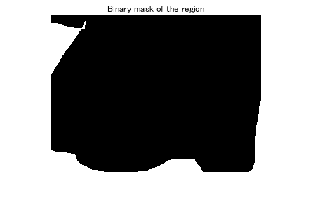
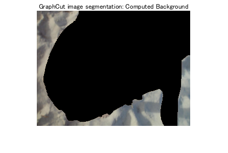

Contents
% Simply run this file to see the tool. % % See html/ for a published example run of this document. % % See 'ExamplesForImageSegmentationUsingGraphCutOptimization' for % precomputed examples (I created the masks for those in photoshop). addpath('Implementation') addpath('Implementation/GCMex')
1. Foreground-background selection tool
see imfreehand_mask_image
image = imread8toDouble('ForegroundBackgroundImage.png'); uiwait(msgbox('Draw the foreground mask')); foreground = imfreehand_mask_image(image); uiwait(msgbox('Draw the background mask')); background = imfreehand_mask_image(image);
2. Color models
See immaskcolors and gmmcolormodel. This happens automatically in imsegment2 to construct the pdfs used to call imsegment2_pdf.
3. Set up for graph cut
See imsegment2_pdf. I moved the call to GCMex into its own function called graph_minstcut which solves the Minimum s-t-cut problem on a completely connected, weighted graph.
4. Demonstration
See 'ExamplesForImageSegmentationUsingGraphCutOptimization.pdf' for precomputed examples (I created the masks for those in photoshop).
imsegment2_demo_sub(image, foreground, background);
map each pixel in progress... map each pixel in progress... constructing UNARY... constructing PAIRWISE... GCMex 67500 ENERGY = -4.3622e+04 ENERGYAFTER = -1.3710e+05